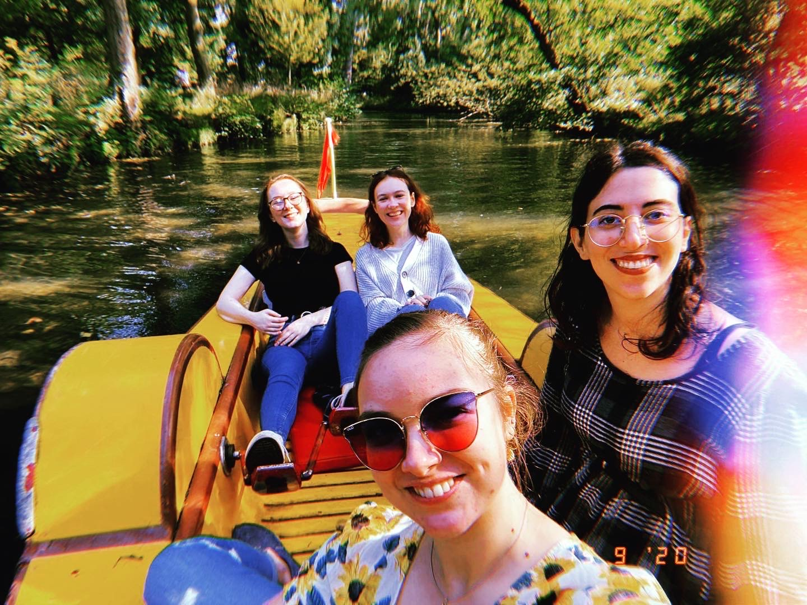
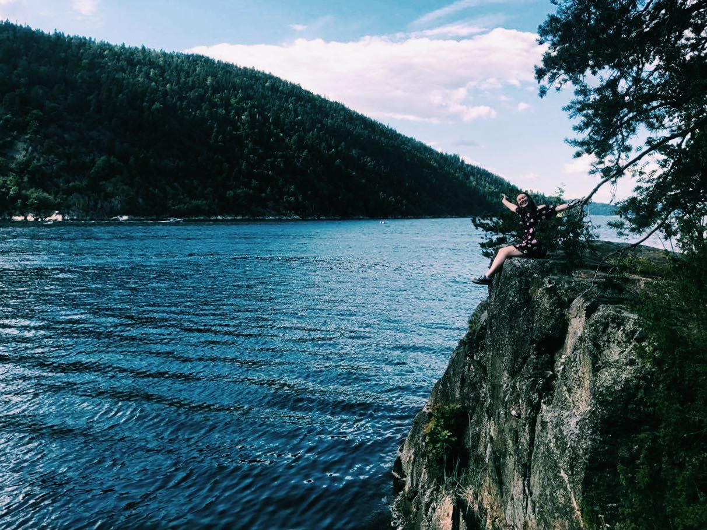
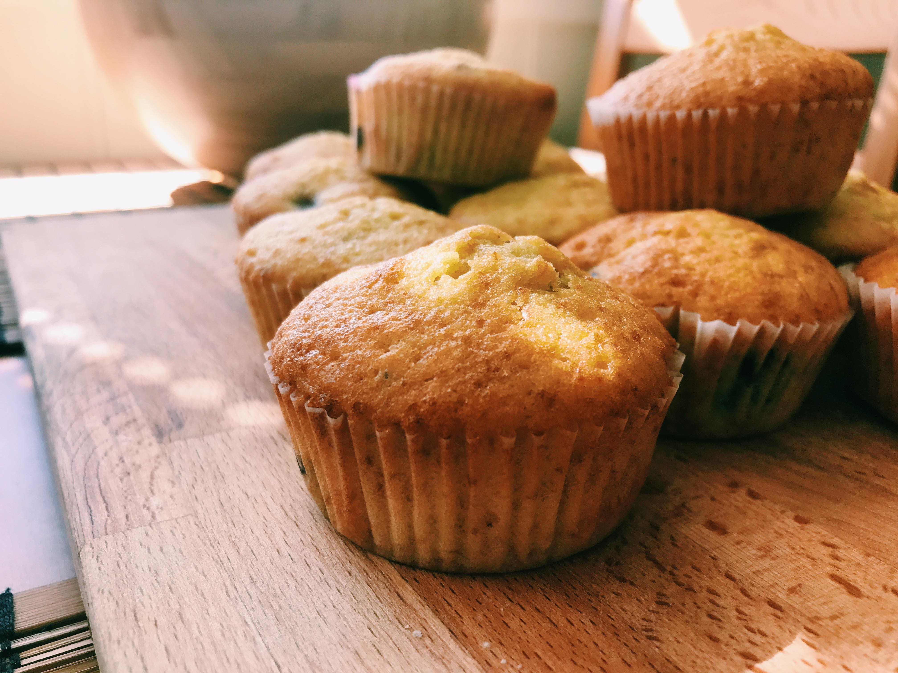

Hello, I'm Ugne
Student at Oxford Brookes


Hello, I'm Ugne
Student at Oxford Brookes
I`m Ugne Matuliauskaite. I was born in Lithuania but when I was 16-17 my family and I moved to Norway. I`m now living in Oxford and am a 2nd year Media, Journalism and Publishing student at Oxford Brookes.
I have very varied interests and usually it`s hard for me to stick with one thing, so I`ve tried lots of hobbies like photography, dancing, drama etc before. I think part of the reason why I keep finding new free time activities is because I like challenging myself to try new things, and also even if I don`t continue on with the activity there`s always plenty of fun memories to remember. Like this time when me and some friends took a paddle boat 🚣: 
Reading 📖 is one of my favourite past time activities besides watching movies. Here are some of the books I`ve read recently and recommend:
Hiking 🥾 is most recent hobbies since moving to Norway. It`s something I greatly enjoy doing with both my family and alone. Also it`s a perfect chance to take some lovely pictures! 
Baking 🧁 There`s something really therapeutic about it for me, and usually when I`m stressed or in a bad mood some sweet muffins or banana bread always help to improve my mood.
Since the begining of lockdown I wanted to create some sort of platform for me to build my creative portfolio. This autumn I finally got around to finally doing it and made a bookstagram @ugnesbookshelf for book reviews,recommendations and just all kinds of bookish content.
I`ve also started a blog,Trendy Fonts to express my varied interests in books, movies/TV shows, music and fashion in form of looking how typography is used in popular culture. I had a lot of fun creating this blog and I hope people enjoy reading it too!